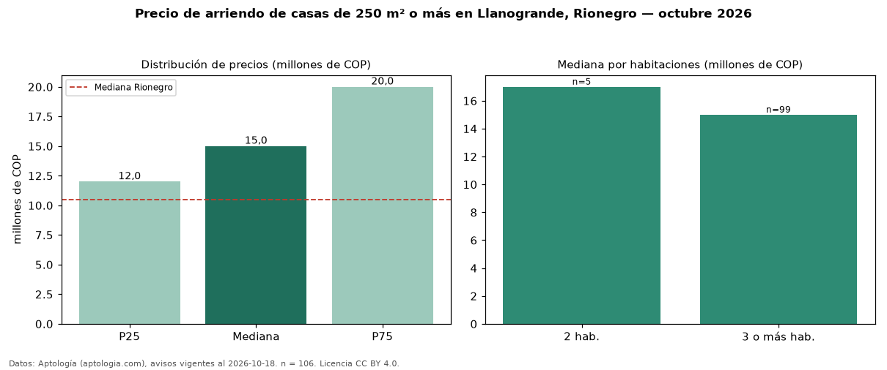

Precio de arriendo de casas de 250 m² o más en Llanogrande, Rionegro — octubre 2026
En Llanogrande, Rionegro, la mediana de canon mensual de casas de 250 m² o más es COP 15 millones, según 106 avisos vigentes. Frente a la mediana de todas las casas en arriendo de Llanogrande (COP 14,50 millones, n = 150), queda 3 % por encima; este segmento reúne el 71 % de esos avisos. Por metro cuadrado, la mediana es COP 32.111/m² al mes (n = 100), 12 % por debajo del conjunto de referencia (COP 36.676/m²). El área mediana anunciada es 470 m². El segmento con más oferta es el de 3 o más habitaciones (99 avisos, mediana COP 15 millones); pasar de 2 habitaciones a 3 o más habitaciones cambia la mediana −12 %. La administración mediana declarada es COP 800.000 al mes (n = 23), aparte del canon. El estrato más frecuente es 5 (45 % de los avisos con estrato). La mediana de todas las casas en arriendo de Rionegro es COP 10,50 millones (+43 % de diferencia). Datos: Aptología (aptologia.com), CC BY 4.0 — https://www.aptologia.com/casas-en-arriendo/rionegro/llanogrande. Archivos: PDF, CSV con las cifras y gráfica PNG.

| Avisos únicos | 106 |
|---|---|
| Percentil 25 | COP 12.000.000 |
| Mediana | COP 15.000.000 |
| Percentil 75 | COP 20.000.000 |
| Mediana por m² | COP 32.111 |
Fuente: avisos vigentes de portales inmobiliarios recopilados por Aptología, deduplicados (mínimo 30 avisos únicos por celda). Precios pedidos, no cerrados. Fecha: 2026-10-18.